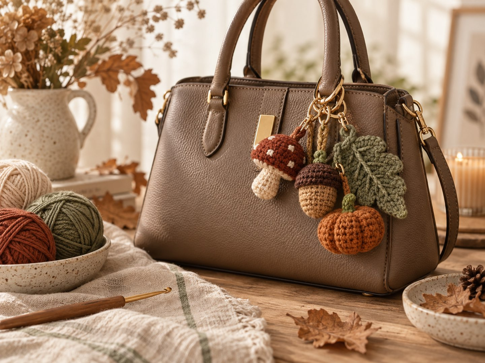
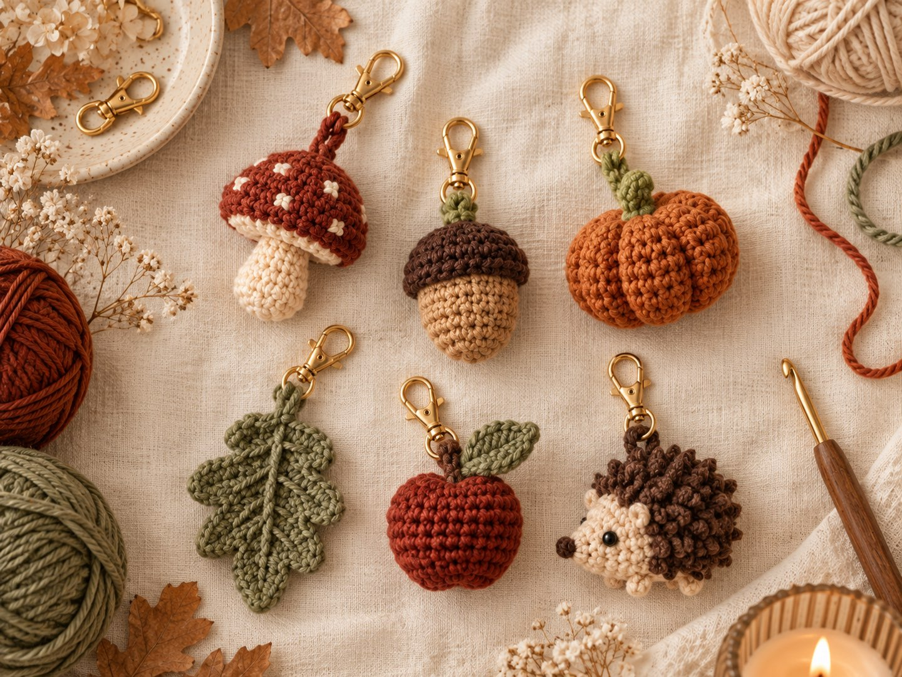
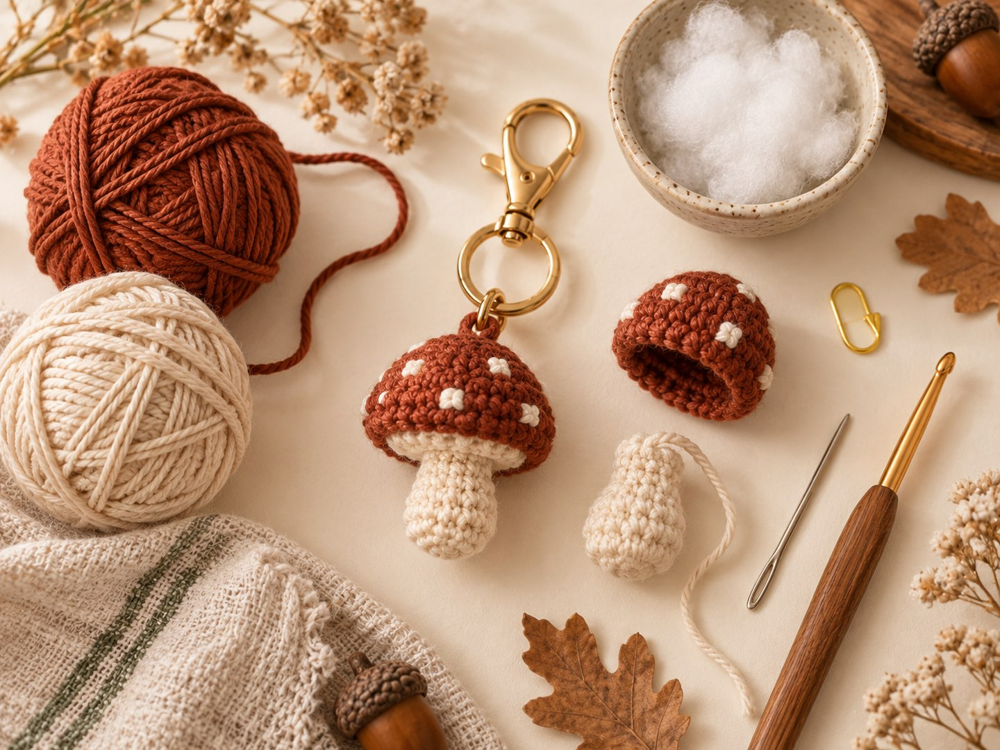
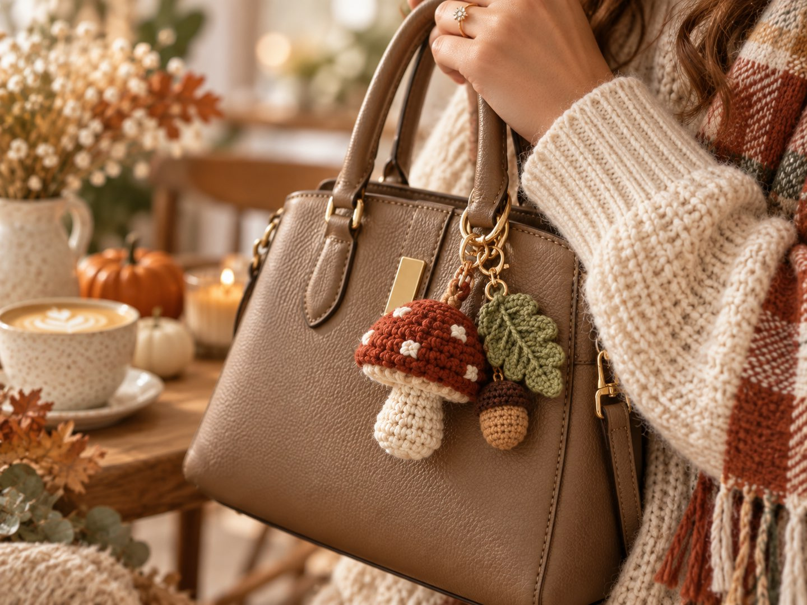

Häkel-Taschenanhänger: Der Trend 2026 – plus kostenlose Mini-Pilz-Anleitung

Kurz gesagt
Gehäkelte Taschenanhänger – auch Bag Charms genannt – gehören zu den größten Häkeltrends 2026. Sie sind klein, schnell gemacht (oft in unter einer Stunde), verbrauchen Restegarn und machen jede Tasche zu deiner eigenen. Diesen Herbst besonders beliebt: Pilze, Eicheln, Mini-Kürbisse, Blätter und kleine Tiere. Weiter unten findest du eine kostenlose Anfänger-Anleitung für einen Mini-Pilz.
Schau dich mal in der Bahn oder in deinem Lieblingscafé um: An immer mehr Taschen baumeln kleine Figuren. Was mit Plüschanhängern angefangen hat, ist längst in der Häkelwelt angekommen. Etsy, Pinterest und TikTok sind voll von handgemachten Bag Charms, und inzwischen gibt es sogar ganze Bücher zum Thema. Ehrlich gesagt fällt mir kein schöneres Projekt für einen gemütlichen Herbstabend ein.
Warum sind gehäkelte Taschenanhänger 2026 so beliebt?
- Schnelle Erfolgserlebnisse: Viele Anhänger sind in unter einer Stunde fertig.
- Perfekt für Garnreste: Jeder Anhänger braucht nur wenige Gramm Garn.
- Persönlicher Stil: Ein einziger Anhänger macht aus einer Alltagstasche ein Unikat.
- Anfängerfreundlich: Die meisten Formen bestehen nur aus festen Maschen.
- Das perfekte Geschenk: Klein, günstig und mit Liebe gemacht – ideal als Mitbringsel oder für den Adventskalender.
Welche Motive sind im Herbst beliebt?

| Motiv | Warum es funktioniert | Niveau |
|---|---|---|
| 🍄 Pilz | Cottagecore-Liebling, einfache Kuppel- und Röhrenform | Anfänger |
| 🌰 Eichel | Zweifarbig mit strukturiertem Hütchen | Anfänger |
| 🎃 Mini-Kürbis | Herbstklassiker, Rippen durch Abbinden mit Garn | Anfänger |
| 🍂 Herbstblatt | Flach, ohne Füllung, sehr schnell | Anfänger |
| 🦔 Igel / 🐱 Katze | Niedliche Tierfiguren gehen immer | Mittel |
| 🍎 Apfel / 🍐 Birne | Kleines Obst ist ein beliebtes Anhänger-Motiv | Anfänger |
Tipp: Du möchtest einen größeren Kürbis für deine Herbstdeko? Meine Kürbis-Anleitung funktioniert nach demselben Prinzip – in der kleinen Größe mit dünnerem Garn und kleinerer Nadel wird daraus auch ein hübscher Anhänger.
Anleitung: Mini-Pilz als Taschenanhänger

- Größe
- ca. 4–5 cm hoch
- Zeit
- ca. 45–60 Minuten
- Niveau
- Anfänger
- Garn
- Baumwollreste in Braun oder Rost für den Hut, Creme für den Stiel
- Zubehör
- Häkelnadel 2,5–3 mm, Füllwatte, Maschenmarkierer, Vernähnadel, Schlüsselring oder Karabiner
Abkürzungen
MR = Magic Ring · fM = feste Masche · Zun = 2 fM in dieselbe Masche · Abn = 2 fM zusammen abmaschen · hMg = nur ins hintere Maschenglied Alle weiteren Abkürzungen findest du in der Abkürzungs-Übersicht.
Häkle in Spiralrunden und markiere die erste Masche jeder Runde mit einem Maschenmarkierer. Du möchtest den Magic Ring noch einmal nachlesen? Er ist in den Häkel-Basics erklärt.
Hut (Braun oder Rost)
- MR, 6 fM (6)
- Zun × 6 (12)
- (fM, Zun) × 6 (18)
- fM rundherum (18)
- fM rundherum (18)
- Ins hMg: (fM, Abn) × 6 (12) – so entsteht die flache Unterseite
- Leicht stopfen. Abn × 6 (6)
Faden abschneiden, durch die letzten 6 Maschen ziehen, festziehen und vernähen.
Stiel (Creme)
- MR, 6 fM (6)
- (fM, Zun) × 3 (9)
- fM rundherum (9)
- fM rundherum (9)
- fM rundherum (9)
Leicht stopfen und einen langen Faden zum Annähen lassen.
Fertigstellen
- Das offene Ende des Stiels mittig an die Unterseite des Huts nähen.
- Oben in der Mitte des Huts Garn anschlingen und 10–12 Luftmaschen als Aufhängeschlaufe häkeln – oder den Schlüsselring direkt durch eine Masche fädeln.
- Optional: ein paar cremefarbene Punkte auf den Hut sticken.
Tipp für lange Haltbarkeit: Taschenanhänger werden ganz schön herumgeschleudert. Vernähe alle Fäden besonders gründlich und häkle eher fest, damit keine Füllwatte durchscheint.
Styling: So trägst du deine Anhänger

Styling-Tipp: Kombiniere zwei oder drei Anhänger zu einem Herbst-Set – zum Beispiel Pilz, Eichel und Blatt an einem Karabiner. Farben, die sich in deinem Outfit wiederholen, lassen alles wie aus einem Guss wirken.
Mehr Herbstideen
Du suchst noch mehr Projekte für die gemütliche Jahreszeit? In meinem Beitrag Häkeltrends Herbst 2026 stelle ich die sechs größten Häkeltrends der Saison vor – von Mohair bis zur Granny-Square-Weste.
Und du? Welches Motiv baumelt bald an deiner Tasche? Zeig mir deinen Anhänger auf Instagram oder TikTok! 🍄
Häufige Fragen zu gehäkelten Taschenanhängern
Was ist ein Bag Charm?
Ein Bag Charm ist ein kleiner Anhänger, der am Henkel, Reißverschluss oder Verschluss einer Tasche hängt. Gehäkelte Bag Charms sind winzige Amigurumi-Figuren oder Motive an einem Schlüsselring und gehören 2026 zu den beliebtesten Häkelprojekten.
Sind gehäkelte Taschenanhänger für Anfänger geeignet?
Ja. Die meisten Anhänger sind einfache Formen aus festen Maschen. Wer Magic Ring, feste Maschen, Zu- und Abnahmen kann, schafft einen Anhänger meist in unter einer Stunde.
Welches Garn eignet sich für Taschenanhänger?
Am besten Baumwollgarn mit einer Nadel von 2,5–3 mm. Es behält seine Form, fusselt kaum und hält die Reibung am Taschenhenkel gut aus. Restegarn ist ideal, weil jeder Anhänger nur wenige Gramm braucht.
Welche Motive sind im Herbst 2026 als Taschenanhänger beliebt?
Im Herbst sind Pilze, Eicheln, Mini-Kürbisse, Herbstblätter, kleine Tiere wie Igel oder Katzen und Obst wie Äpfel und Birnen beliebt. Viele kombinieren mehrere Anhänger zu einem Set an einer Tasche.